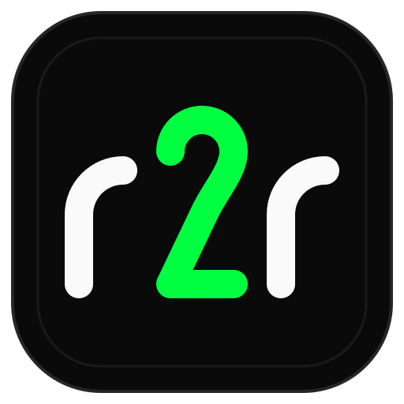

A new script per provider
The OpenAI notebook doesn't run against Ollama, the Anthropic version handles retries differently, and nobody remembers which one built last month's set.
r2r runs every row of your CSV, JSON, JSONL or Parquet file through a prompt template and the LLM you choose, then writes Unsloth-ready JSONL. Quality filters, class balancing and train/test splits are built into the same CLI.
$ r2r process emails.csv \ --config config/ollama.yaml \ -t email_analyzing \ -o train.jsonl # one record in train.jsonl {"conversations": [ {"from": "human", "value": "Analyze this email: Your account is suspended. Verify at secure-login.co…"}, {"from": "gpt", "value": "Phishing. The link domain does not match the claimed sender…"} ]}
Fine-tuning needs instruction–response pairs in an exact format. Most teams get there with scripts written in a hurry, and each new project starts again from zero.
The OpenAI notebook doesn't run against Ollama, the Anthropic version handles retries differently, and nobody remembers which one built last month's set.
Empty answers, truncated responses and off-topic replies end up in the file, and you only notice once you're reading samples by hand.
Real data is skewed. Without balancing, the model learns that the majority class is almost always the right answer.
Malformed and low-quality pairs go straight into the weights. Evaluation scores drop and nothing points back to the dataset.
A format error found after the API calls finish means paying for the whole batch again.
Without a fixed template, seed and split, two people building "the same" dataset get different files.
r2r loads, prompts, filters, balances and formats in one pipeline, with every step driven by files you can commit and review.
Point it at a CSV, JSON, JSONL or Parquet file. Column values become template variables, with no conversion step first.
Ollama for local runs, or OpenAI, Anthropic, Gemini, Mistral and OpenRouter in the cloud. Switching is one --config config/<provider>.yaml flag.
Jinja2 and YAML templates live in your repo. Twelve ship built in, covering QA, email and SMS analysis, code explanation and more.
Six filters check length, completeness, coherence, relevance, format and inappropriate content. Anything under --quality-threshold is dropped.
Use --balance to even out classes and --split to write train and test files. A fixed --seed gives the same dataset on every run.
Check the output before you pay for it. Use --preview -n 5 to see real model output for five rows and --validate to check data and template together, all before you commit to a full paid run.
Validate columns and clean the file before any model is called.
Preview a handful of rows against the real model and adjust the prompt until the answers look right.
Write filtered, conversation-format JSONL that Unsloth loads directly.
# install from source $ git clone https://github.com/montimage-projects/raw-to-rich.git $ cd raw-to-rich && python -m venv .venv && source .venv/bin/activate $ pip install -e . # preview, then generate $ r2r process data.csv --preview --samples 5 $ r2r process data.csv --output dataset.jsonl

Montimage is a cybersecurity company founded in 2004. r2r came out of its own work building instruction datasets for security-focused models, such as email and URL phishing analysis, and it is one stage of a larger train–evaluate–adjust pipeline.
Only if you choose a cloud provider. With Ollama, every prompt and response stays on your hardware. With a cloud provider, each rendered prompt is sent to that provider's API under your own key.
JSONL in the conversation format Unsloth expects. Each line holds a conversations list of human/gpt turns, plus an optional system message.
Yes. Write a Jinja2 or YAML template that references your column names and pass it with -t path/to/template. The built-in templates are good starting points to copy.
Start with --preview on a few rows, cap a run with r2r generate --max-samples, and use --dry-run to check the whole pipeline without calling the model.
Yes. Templates and provider configs are plain files you commit, and --seed fixes sampling, balancing and splits. Model output can still vary between runs, depending on the provider's temperature settings.
Not yet. Install from source with pip install -e ., which puts the r2r command on your path. The CLI docs cover every command and flag.
Preview five rows for free on a local model, then generate the full dataset with the same command.